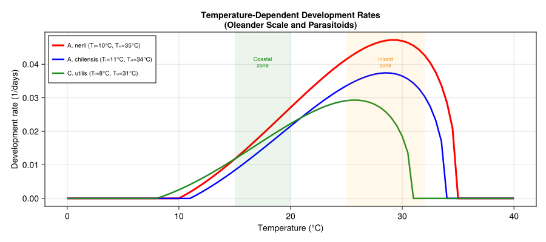
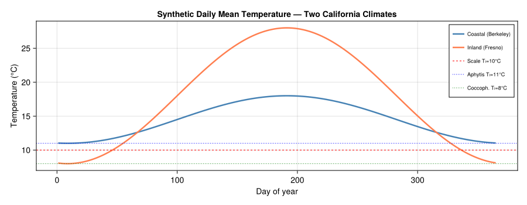
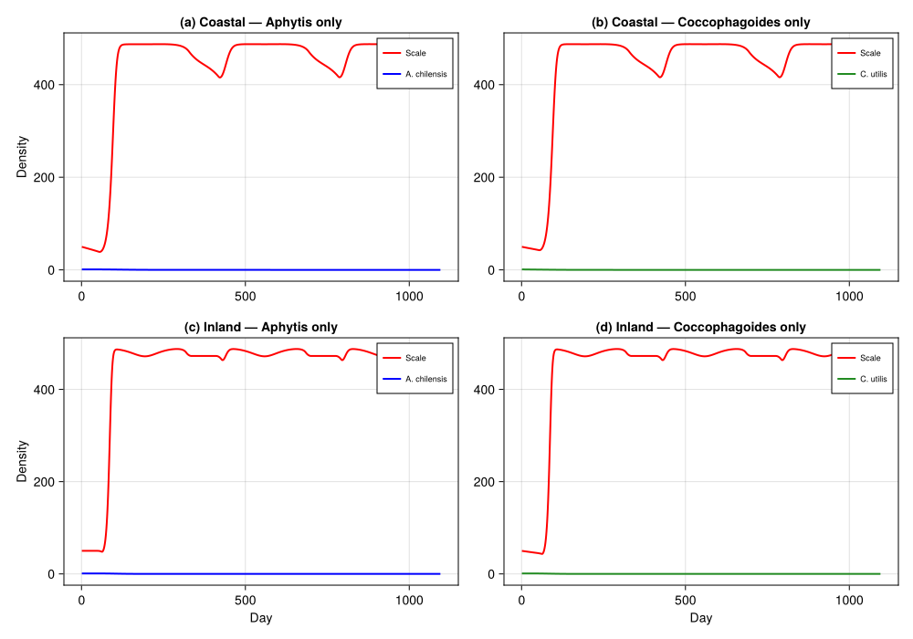
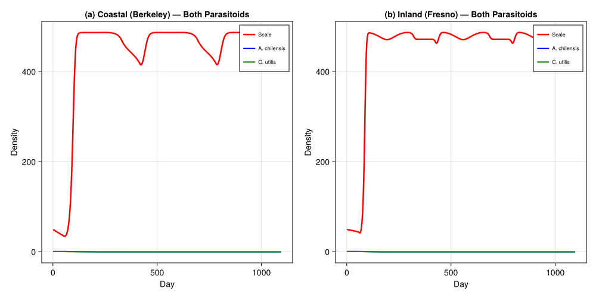
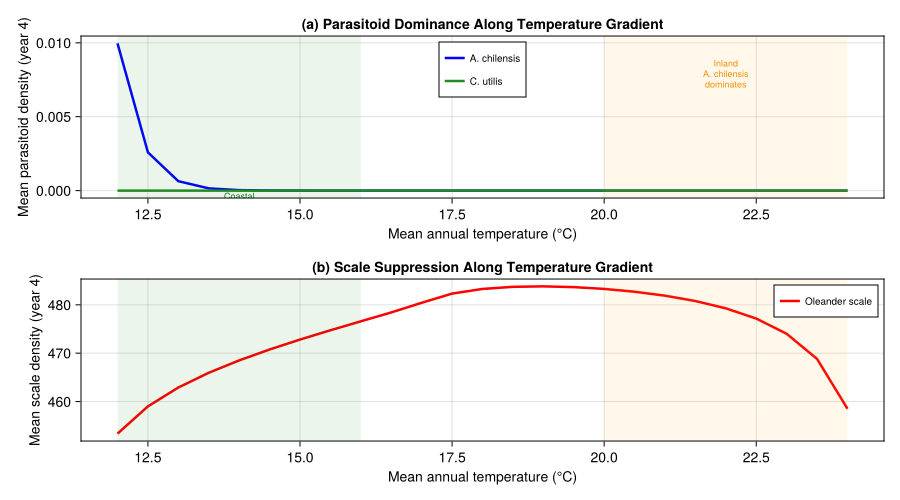

Oleander Scale Regulation by Competing Parasitoids
PhysiologicallyBasedDemographicModels.jl
- Introduction
- Scale Biology
- Aphytis chilensis — Warm-Adapted Parasitoid
- Coccophagoides utilis — Cool-Adapted Parasitoid
- Competitive Dynamics
- Simulation Setup
- Scale with Single Parasitoid
- Two-Parasitoid Competition
- Regional Analysis
- Parameter Sources
- References
Primary reference: (Gutierrez and Pizzamiglio 2007).
Introduction
Oleander scale, Aspidiotus nerii Bouché (Hemiptera: Diaspididae), is a cosmopolitan armored scale insect that attacks olive (Olea europaea), oleander (Nerium oleander), citrus, and many ornamental hosts. In California olive orchards it can reach damaging densities, reducing fruit quality and tree vigour. Biological control of A. nerii has been attempted through augmentative and classical releases of aphelinid parasitoid wasps since the early twentieth century.
Two parasitoids dominate the natural-enemy complex on olive in California:
- ***Aphytis chilensis*** Howard — a warm-adapted ectoparasitoid that attacks second-instar and older scale stages, with optimal performance at 20–30 °C.
- ***Coccophagoides utilis*** Doutt — a cool-adapted endoparasitoid that attacks nymph II and young adult stages, with optimal performance at 15–25 °C.
Rochat and Gutierrez (2001) showed that weather mediates the competitive outcome between these two species along a coastal-to-inland gradient in California. In cool coastal areas (e.g., Berkeley), C. utilis dominates and provides effective control. In hot inland valleys (e.g., Fresno), A. chilensis dominates but gives only moderate suppression. In intermediate climates, the two parasitoids coexist and jointly reduce scale populations below economic thresholds. Gutierrez and Pizzamiglio (2007) extended this analysis regionally, confirming that temperature regime is the primary determinant of parasitoid community composition and biological control efficacy.
This vignette implements a physiologically based demographic model (PBDM) for the oleander scale–two parasitoid tritrophic system using PhysiologicallyBasedDemographicModels.jl, following the modeling framework of Rochat and Gutierrez (2001).
References:
- Rochat, J. and Gutierrez, A.P. (2001). Weather-mediated regulation of olive scale by two parasitoids. Journal of Animal Ecology 70:476–490.
- Gutierrez, A.P. and Pizzamiglio, M.A. (2007). A regional analysis of weather mediated competition between a parasitoid and a coccinellid predator of oleander scale. Neotropical Entomology 36:70–83.
- DeBach, P. and Sundby, R.A. (1963). Competitive displacement between ecological homologues. Hilgardia 34:105–166.
Scale Biology
Oleander scale is an armored diaspidid with four post-crawler life stages. Crawlers (mobile first instars) disperse from the mother’s cover, settle, and pass through two nymphal stages before reaching the adult. Males are winged and short-lived; females remain sessile under their waxy cover throughout life. All development is temperature-dependent with a lower threshold near 10 °C.
Development Parameters
| Stage | Duration (DD \>10 °C) | k substages | Description |
|---|---|---|---|
| Crawler | 95 | 10 | Mobile dispersal phase |
| Nymph I | 135 | 12 | Settled, first cover formed |
| Nymph II | 175 | 15 | Second cover; parasitoid-vulnerable |
| Adult ♀ | 200 | 15 | Reproductive; produces crawlers |
Total pre-adult development is ~405 DD above 10 °C, yielding 3–4 generations per year in coastal California and up to 4–5 in the Central Valley. Adult females produce 80–120 crawlers over their lifetime.
using PhysiologicallyBasedDemographicModels
using CairoMakieScale Development Rate
Oleander scale development follows a Brière-type nonlinear rate function with a lower threshold of 10 °C and an upper threshold of 35 °C:
# A. nerii thermal parameters (Rochat & Gutierrez, 2001)
const SCALE_TL = 10.0 # lower developmental threshold (°C)
const SCALE_TU = 35.0 # upper developmental threshold (°C)
scale_dev = BriereDevelopmentRate(0.000035, SCALE_TL, SCALE_TU)
scale_linear = LinearDevelopmentRate(SCALE_TL, SCALE_TU)
println("Oleander scale development rates (1/days):")
for T in [12.0, 15.0, 20.0, 25.0, 30.0, 34.0]
r = development_rate(scale_dev, T)
println(" T=$(T)°C: r=$(round(r, digits=4))")
endOleander scale development rates (1/days):
T=12.0°C: r=0.004
T=15.0°C: r=0.0117
T=20.0°C: r=0.0271
T=25.0°C: r=0.0415
T=30.0°C: r=0.047
T=34.0°C: r=0.0286Scale Life Stages
# Stage durations in DD >10°C (Rochat & Gutierrez, 2001)
const SCALE_DD_CRAWLER = 95.0 # crawler dispersal phase
const SCALE_DD_NYMPH1 = 135.0 # settled nymph I
const SCALE_DD_NYMPH2 = 175.0 # nymph II (parasitoid-vulnerable)
const SCALE_DD_ADULT = 200.0 # reproductive adult female
# Background mortality rates (per DD)
const SCALE_MU_CRAWLER = 0.004 # highest: exposed, mobile
const SCALE_MU_NYMPH = 0.001 # protected under cover
const SCALE_MU_ADULT = 0.002 # senescence
scale_stages = [
LifeStage(:crawler, DistributedDelay(10, SCALE_DD_CRAWLER; W0=50.0), scale_linear, SCALE_MU_CRAWLER),
LifeStage(:nymph_I, DistributedDelay(12, SCALE_DD_NYMPH1; W0=10.0), scale_linear, SCALE_MU_NYMPH),
LifeStage(:nymph_II, DistributedDelay(15, SCALE_DD_NYMPH2; W0=5.0), scale_linear, SCALE_MU_NYMPH),
LifeStage(:adult, DistributedDelay(15, SCALE_DD_ADULT; W0=2.0), scale_linear, SCALE_MU_ADULT),
]
scale = Population(:a_nerii, scale_stages)
println("Oleander scale population:")
println(" Life stages: ", n_stages(scale))
println(" Total substages: ", n_substages(scale))
println(" Pre-adult period: $(SCALE_DD_CRAWLER + SCALE_DD_NYMPH1 + SCALE_DD_NYMPH2) DD >$(SCALE_TL)°C")
println(" Adult lifespan: $(SCALE_DD_ADULT) DD >$(SCALE_TL)°C")Oleander scale population:
Life stages: 4
Total substages: 52
Pre-adult period: 405.0 DD >10.0°C
Adult lifespan: 200.0 DD >10.0°CScale Fecundity
Adult females produce crawlers at a temperature-dependent rate, with a concave thermal window peaking near 25 °C:
const SCALE_FECUNDITY_MAX = 4.0 # max crawlers/♀/day at optimum
const SCALE_FECUND_TL = 12.0 # lower limit for reproduction (°C)
const SCALE_FECUND_OPT = 25.0 # optimum temperature (°C)
const SCALE_FECUND_TU = 34.0 # upper limit for reproduction (°C)
const SCALE_LIFETIME_FECUND = 100.0 # total crawlers per female
function scale_fecundity(T)
T < SCALE_FECUND_TL && return 0.0
T > SCALE_FECUND_TU && return 0.0
T_mid = (SCALE_FECUND_TU + SCALE_FECUND_TL) / 2.0
φ = max(0.0, 1.0 - ((T - T_mid) / (T_mid - SCALE_FECUND_TL))^2)
return SCALE_FECUNDITY_MAX * φ
end
println("Scale fecundity (crawlers/♀/day):")
for T in [12.0, 15.0, 20.0, 25.0, 30.0, 34.0]
f = scale_fecundity(T)
println(" T=$(T)°C: $(round(f, digits=2))")
endScale fecundity (crawlers/♀/day):
T=12.0°C: 0.0
T=15.0°C: 1.88
T=20.0°C: 3.7
T=25.0°C: 3.87
T=30.0°C: 2.38
T=34.0°C: 0.0Aphytis chilensis — Warm-Adapted Parasitoid
Aphytis chilensis is an ectoparasitoid that oviposits beneath the scale cover on second-instar and older stages. It is adapted to warmer conditions, with development ceasing below ~11 °C and an optimum range of 20–30 °C. This species dominates in hot inland valleys where summer temperatures regularly exceed 30 °C.
# A. chilensis thermal parameters (Table 1, Rochat & Gutierrez, 2001)
const AC_TL = 11.0 # lower developmental threshold (°C)
const AC_TU = 34.0 # upper developmental threshold (°C)
const AC_DD_IMMATURE = 200.0 # egg to adult emergence (DD >11°C)
const AC_DD_ADULT = 125.0 # adult lifespan (DD >11°C)
const AC_SEARCH = 0.15 # search rate α (scales/parasitoid/day)
const AC_SEX_RATIO = 0.60 # proportion female
ac_dev = BriereDevelopmentRate(0.000032, AC_TL, AC_TU)
ac_linear = LinearDevelopmentRate(AC_TL, AC_TU)
ac_stages = [
LifeStage(:immature, DistributedDelay(15, AC_DD_IMMATURE; W0=0.0), ac_linear, 0.002),
LifeStage(:adult, DistributedDelay(12, AC_DD_ADULT; W0=1.0), ac_linear, 0.003),
]
aphytis = Population(:a_chilensis, ac_stages)
println("A. chilensis:")
println(" Lower threshold: $(AC_TL)°C")
println(" Immature period: $(AC_DD_IMMATURE) DD >$(AC_TL)°C")
println(" Adult lifespan: $(AC_DD_ADULT) DD >$(AC_TL)°C")
println(" Search rate: $(AC_SEARCH)")A. chilensis:
Lower threshold: 11.0°C
Immature period: 200.0 DD >11.0°C
Adult lifespan: 125.0 DD >11.0°C
Search rate: 0.15Host-Stage Preference
A. chilensis preferentially attacks nymph II and young adult scales, with reduced success on nymph I due to smaller body size:
# A. chilensis host-stage preference (relative attack probability)
const AC_PREF = Dict(
:crawler => 0.0, # not attacked (too small/mobile)
:nymph_I => 0.3, # low: small body under thin cover
:nymph_II => 1.0, # primary target
:adult => 0.7, # attacked but thicker cover reduces access
)
println("A. chilensis host preferences:")
for (stage, pref) in sort(collect(AC_PREF), by=x->x[2], rev=true)
println(" $(stage): $(pref)")
endA. chilensis host preferences:
nymph_II: 1.0
adult: 0.7
nymph_I: 0.3
crawler: 0.0Coccophagoides utilis — Cool-Adapted Parasitoid
Coccophagoides utilis is an endoparasitoid introduced to California from Pakistan in 1957. It attacks nymph II and young adult stages by ovipositing inside the scale body. This species is adapted to cooler coastal conditions, with a lower developmental threshold near 8 °C and optimal performance at 15–25 °C. It suffers high mortality above 30 °C.
# C. utilis thermal parameters (Table 1, Rochat & Gutierrez, 2001)
const CU_TL = 8.0 # lower developmental threshold (°C)
const CU_TU = 31.0 # upper developmental threshold (°C)
const CU_DD_IMMATURE = 225.0 # egg to adult emergence (DD >8°C)
const CU_DD_ADULT = 140.0 # adult lifespan (DD >8°C)
const CU_SEARCH = 0.10 # search rate α (scales/parasitoid/day)
const CU_SEX_RATIO = 0.55 # proportion female
cu_dev = BriereDevelopmentRate(0.000028, CU_TL, CU_TU)
cu_linear = LinearDevelopmentRate(CU_TL, CU_TU)
cu_stages = [
LifeStage(:immature, DistributedDelay(15, CU_DD_IMMATURE; W0=0.0), cu_linear, 0.002),
LifeStage(:adult, DistributedDelay(12, CU_DD_ADULT; W0=1.0), cu_linear, 0.003),
]
coccophagoides = Population(:c_utilis, cu_stages)
println("C. utilis:")
println(" Lower threshold: $(CU_TL)°C")
println(" Immature period: $(CU_DD_IMMATURE) DD >$(CU_TL)°C")
println(" Adult lifespan: $(CU_DD_ADULT) DD >$(CU_TL)°C")
println(" Search rate: $(CU_SEARCH)")C. utilis:
Lower threshold: 8.0°C
Immature period: 225.0 DD >8.0°C
Adult lifespan: 140.0 DD >8.0°C
Search rate: 0.1Host-Stage Preference
C. utilis is an endoparasitoid that requires larger hosts for successful development, attacking nymph II and adult stages:
# C. utilis host-stage preference (relative attack probability)
const CU_PREF = Dict(
:crawler => 0.0, # not attacked
:nymph_I => 0.1, # rarely: too small for endoparasitoid
:nymph_II => 1.0, # primary target
:adult => 0.8, # frequently attacked
)
println("C. utilis host preferences:")
for (stage, pref) in sort(collect(CU_PREF), by=x->x[2], rev=true)
println(" $(stage): $(pref)")
endC. utilis host preferences:
nymph_II: 1.0
adult: 0.8
nymph_I: 0.1
crawler: 0.0Competitive Dynamics
The two parasitoids share the same host stages (nymph II and adult), so exploitative competition is the primary interaction. Weather mediates the outcome by differentially affecting development and survival:
At high temperatures (inland, \>30 °C frequent): C. utilis experiences elevated mortality and slowed development near its upper threshold (31 °C), while A. chilensis thrives (optimum 25–30 °C). → A. chilensis competitively excludes C. utilis.
At cool temperatures (coastal, \<20 °C mean): A. chilensis develops slowly below its 11 °C threshold, while C. utilis (threshold 8 °C) accumulates degree-days earlier in spring and maintains a competitive head start. → C. utilis dominates.
At intermediate temperatures: both species develop at appreciable rates, and coexistence is possible through temporal niche partitioning (C. utilis active earlier in spring, A. chilensis in summer).
fig_dev = Figure(size=(900, 400))
ax_dev = Axis(fig_dev[1, 1],
title="Temperature-Dependent Development Rates\n(Oleander Scale and Parasitoids)",
xlabel="Temperature (°C)",
ylabel="Development rate (1/days)",
)
T_range = 0.0:0.5:40.0
dd_scale = [max(0.0, development_rate(scale_dev, T)) for T in T_range]
dd_ac = [max(0.0, development_rate(ac_dev, T)) for T in T_range]
dd_cu = [max(0.0, development_rate(cu_dev, T)) for T in T_range]
lines!(ax_dev, collect(T_range), dd_scale, linewidth=3.0, color=:red,
label="A. nerii (Tₗ=10°C, Tᵤ=35°C)")
lines!(ax_dev, collect(T_range), dd_ac, linewidth=2.5, color=:blue,
label="A. chilensis (Tₗ=11°C, Tᵤ=34°C)")
lines!(ax_dev, collect(T_range), dd_cu, linewidth=2.5, color=:forestgreen,
label="C. utilis (Tₗ=8°C, Tᵤ=31°C)")
# Shade climate zones
vspan!(ax_dev, 15.0, 20.0, color=(:green, 0.08))
text!(ax_dev, 17.5, maximum(dd_scale) * 0.9,
text="Coastal\nzone", align=(:center, :top), fontsize=9, color=:green)
vspan!(ax_dev, 25.0, 32.0, color=(:orange, 0.08))
text!(ax_dev, 28.5, maximum(dd_scale) * 0.9,
text="Inland\nzone", align=(:center, :top), fontsize=9, color=:darkorange)
axislegend(ax_dev, position=:lt, framevisible=true, labelsize=10)
fig_dev
Simulation Setup
We compare tritrophic dynamics under two representative California climates:
- Coastal (Berkeley) — mild year-round, Tmin 8–12 °C, Tmax 15–22 °C
- Inland (Fresno) — hot summers, cold winters, Tmin 5–18 °C, Tmax 20–38 °C
Weather Generation
n_years = 3
n_days = 365 * n_years
function coastal_weather(day)
doy = mod(day - 1, 365) + 1
T_mean = 14.5 + 3.5 * sin(2π * (doy - 100) / 365)
T_min = T_mean - 3.5
T_max = T_mean + 4.0
return (T_mean=T_mean, T_min=T_min, T_max=T_max)
end
function inland_weather(day)
doy = mod(day - 1, 365) + 1
T_mean = 18.0 + 10.0 * sin(2π * (doy - 100) / 365)
T_min = T_mean - 7.5
T_max = T_mean + 10.0
return (T_mean=T_mean, T_min=T_min, T_max=T_max)
end
# Build WeatherSeries for each climate
coastal_days = [DailyWeather(coastal_weather(d).T_mean, coastal_weather(d).T_min,
coastal_weather(d).T_max) for d in 1:n_days]
weather_coastal = WeatherSeries(coastal_days)
inland_days = [DailyWeather(inland_weather(d).T_mean, inland_weather(d).T_min,
inland_weather(d).T_max) for d in 1:n_days]
weather_inland = WeatherSeries(inland_days)
# Verify temperature ranges
c_temps = [coastal_weather(d).T_mean for d in 1:365]
i_temps = [inland_weather(d).T_mean for d in 1:365]
println("Coastal (Berkeley) — mean T range: $(round(minimum(c_temps), digits=1))–$(round(maximum(c_temps), digits=1))°C")
println("Inland (Fresno) — mean T range: $(round(minimum(i_temps), digits=1))–$(round(maximum(i_temps), digits=1))°C")Coastal (Berkeley) — mean T range: 11.0–18.0°C
Inland (Fresno) — mean T range: 8.0–28.0°CTemperature Profiles
fig_wx = Figure(size=(900, 350))
ax_wx = Axis(fig_wx[1, 1],
title="Synthetic Daily Mean Temperature — Two California Climates",
xlabel="Day of year",
ylabel="Temperature (°C)",
)
days_yr = 1:365
lines!(ax_wx, collect(days_yr), [coastal_weather(d).T_mean for d in days_yr],
linewidth=2.5, color=:steelblue, label="Coastal (Berkeley)")
lines!(ax_wx, collect(days_yr), [inland_weather(d).T_mean for d in days_yr],
linewidth=2.5, color=:coral, label="Inland (Fresno)")
# Threshold lines
hlines!(ax_wx, [SCALE_TL], color=:red, linestyle=:dash, linewidth=1, label="Scale Tₗ=10°C")
hlines!(ax_wx, [AC_TL], color=:blue, linestyle=:dot, linewidth=1, label="Aphytis Tₗ=11°C")
hlines!(ax_wx, [CU_TL], color=:forestgreen, linestyle=:dot, linewidth=1, label="Coccoph. Tₗ=8°C")
axislegend(ax_wx, position=:rt, framevisible=true, labelsize=9)
fig_wx
Scale with Single Parasitoid
We first examine each parasitoid species acting alone against oleander scale under both climates. This reveals the baseline efficacy of each species before competition is introduced.
Trophic Web — Single Parasitoid Scenarios
# Aphytis-only web
web_ac = TrophicWeb()
add_link!(web_ac, TrophicLink(:a_chilensis, :a_nerii,
FraserGilbertResponse(AC_SEARCH), 1.0))
# Coccophagoides-only web
web_cu = TrophicWeb()
add_link!(web_cu, TrophicLink(:c_utilis, :a_nerii,
FraserGilbertResponse(CU_SEARCH), 1.0))
println("Single-parasitoid trophic webs defined")
println(" Aphytis web: $(length(web_ac.links)) link (α=$(AC_SEARCH))")
println(" Coccophagoides web: $(length(web_cu.links)) link (α=$(CU_SEARCH))")Single-parasitoid trophic webs defined
Aphytis web: 1 link (α=0.15)
Coccophagoides web: 1 link (α=0.1)Single-Parasitoid Simulation (Coupled API)
The single-parasitoid scenario uses the PopulationSystem solver with BulkPopulation components and a CustomRule for parasitism dynamics.
function run_single_parasitoid(; weather, par_TL, par_search, par_dd_immature, n_years=3)
n_sim = 365 * n_years
scale_bp = BulkPopulation(:scale, 50.0; K=500.0,
growth_fn=(N, w, day, p) -> begin
T = w.T_mean
dd = max(0.0, T - SCALE_TL)
rate = scale_fecundity(T) * 0.1
N + N * rate * (1.0 - N / 500.0) - SCALE_MU_NYMPH * dd * N
end)
par_bp = BulkPopulation(:parasitoid, 1.0)
parasitism = CustomRule(:parasitism, (sys, w, day, p) -> begin
T = w.T_mean
dd_par = max(0.0, T - p.par_TL)
S = total_population(sys[:scale].population)
P = total_population(sys[:parasitoid].population)
attacked = 0.0
if dd_par > 0 && P > 0
per_capita = p.par_search * (1.0 - exp(-0.5 * S / max(P, 0.1)))
attacked = min(per_capita * P, 0.5 * S)
frac = attacked / max(S, 1e-10)
remove_fraction!(sys, :scale, clamp(frac, 0.0, 1.0))
emerg = dd_par / p.par_dd_immature
sys[:parasitoid].population.value[] = max(0.0,
P + attacked * 0.3 * emerg - 0.003 * dd_par * P)
else
sys[:parasitoid].population.value[] = max(0.0, P * 0.999)
end
return (attacked=attacked,)
end)
system = PopulationSystem(:scale => scale_bp, :parasitoid => par_bp)
prob = PBDMProblem(MultiSpeciesPBDMNew(), system, weather, (1, n_sim);
p=(par_TL=par_TL, par_search=par_search, par_dd_immature=par_dd_immature),
rules=AbstractInteractionRule[parasitism])
sol = solve(prob, DirectIteration())
return sol[:scale], sol[:parasitoid]
endrun_single_parasitoid (generic function with 1 method)Results: Single Parasitoid Under Both Climates
using Statistics
# Coastal climate
s_ac_coast, p_ac_coast = run_single_parasitoid(
weather=weather_coastal,
par_TL=AC_TL, par_search=AC_SEARCH,
par_dd_immature=AC_DD_IMMATURE)
s_cu_coast, p_cu_coast = run_single_parasitoid(
weather=weather_coastal,
par_TL=CU_TL, par_search=CU_SEARCH,
par_dd_immature=CU_DD_IMMATURE)
# Inland climate
s_ac_inland, p_ac_inland = run_single_parasitoid(
weather=weather_inland,
par_TL=AC_TL, par_search=AC_SEARCH,
par_dd_immature=AC_DD_IMMATURE)
s_cu_inland, p_cu_inland = run_single_parasitoid(
weather=weather_inland,
par_TL=CU_TL, par_search=CU_SEARCH,
par_dd_immature=CU_DD_IMMATURE)
days = 1:(365*3)
println("Mean scale density (year 3):")
yr3 = 731:1095
println(" Coastal + Aphytis: $(round(mean(s_ac_coast[yr3]), digits=1))")
println(" Coastal + Coccophagoides: $(round(mean(s_cu_coast[yr3]), digits=1))")
println(" Inland + Aphytis: $(round(mean(s_ac_inland[yr3]), digits=1))")
println(" Inland + Coccophagoides: $(round(mean(s_cu_inland[yr3]), digits=1))")Mean scale density (year 3):
Coastal + Aphytis: 470.8
Coastal + Coccophagoides: 470.8
Inland + Aphytis: 478.1
Inland + Coccophagoides: 478.1fig_single = Figure(size=(1000, 700))
ax1 = Axis(fig_single[1, 1], title="(a) Coastal — Aphytis only",
ylabel="Density", xlabelvisible=false)
lines!(ax1, collect(days), s_ac_coast, linewidth=2, color=:red, label="Scale")
lines!(ax1, collect(days), p_ac_coast, linewidth=2, color=:blue, label="A. chilensis")
axislegend(ax1, position=:rt, labelsize=9)
ax2 = Axis(fig_single[1, 2], title="(b) Coastal — Coccophagoides only",
xlabelvisible=false)
lines!(ax2, collect(days), s_cu_coast, linewidth=2, color=:red, label="Scale")
lines!(ax2, collect(days), p_cu_coast, linewidth=2, color=:forestgreen, label="C. utilis")
axislegend(ax2, position=:rt, labelsize=9)
ax3 = Axis(fig_single[2, 1], title="(c) Inland — Aphytis only",
xlabel="Day", ylabel="Density")
lines!(ax3, collect(days), s_ac_inland, linewidth=2, color=:red, label="Scale")
lines!(ax3, collect(days), p_ac_inland, linewidth=2, color=:blue, label="A. chilensis")
axislegend(ax3, position=:rt, labelsize=9)
ax4 = Axis(fig_single[2, 2], title="(d) Inland — Coccophagoides only",
xlabel="Day")
lines!(ax4, collect(days), s_cu_inland, linewidth=2, color=:red, label="Scale")
lines!(ax4, collect(days), p_cu_inland, linewidth=2, color=:forestgreen, label="C. utilis")
axislegend(ax4, position=:rt, labelsize=9)
fig_single
Two-Parasitoid Competition
When both parasitoids are present, they compete for the shared host resource (nymph II and adult scales). The competitive outcome depends on temperature, which determines relative development rates and search efficiency.
Two-Parasitoid Simulation (Coupled API)
function run_two_parasitoids(; weather, n_years=3)
n_sim = 365 * n_years
scale_bp = BulkPopulation(:scale, 50.0; K=500.0,
growth_fn=(N, w, day, p) -> begin
T = w.T_mean
dd = max(0.0, T - SCALE_TL)
rate = scale_fecundity(T) * 0.1
N + N * rate * (1.0 - N / 500.0) - SCALE_MU_NYMPH * dd * N
end)
ac_bp = BulkPopulation(:aphytis, 1.0)
cu_bp = BulkPopulation(:coccophagoides, 1.0)
competition = CustomRule(:competition, (sys, w, day, p) -> begin
T = w.T_mean
dd_ac = max(0.0, T - AC_TL)
dd_cu = max(0.0, T - CU_TL)
S = total_population(sys[:scale].population)
Pa = total_population(sys[:aphytis].population)
Pc = total_population(sys[:coccophagoides].population)
available = max(0.0, S * 0.6)
# A. chilensis attack
attacked_ac = 0.0
if dd_ac > 0 && Pa > 0
per_cap_ac = AC_SEARCH * (1.0 - exp(-0.5 * available / max(Pa, 0.1)))
attacked_ac = min(per_cap_ac * Pa, 0.4 * available)
end
# C. utilis attack on remaining hosts
remaining = max(0.0, available - attacked_ac)
attacked_cu = 0.0
if dd_cu > 0 && Pc > 0
per_cap_cu = CU_SEARCH * (1.0 - exp(-0.5 * remaining / max(Pc, 0.1)))
attacked_cu = min(per_cap_cu * Pc, 0.4 * remaining)
end
# Remove parasitized from scale
total_attacked = attacked_ac + attacked_cu
if total_attacked > 0 && S > 0
frac = total_attacked / max(S, 1e-10)
remove_fraction!(sys, :scale, clamp(frac, 0.0, 1.0))
end
# Parasitoid population dynamics
if dd_ac > 0
emerg_ac = dd_ac / AC_DD_IMMATURE
sys[:aphytis].population.value[] = max(0.0,
Pa + attacked_ac * 0.3 * emerg_ac - 0.003 * dd_ac * Pa)
else
sys[:aphytis].population.value[] = max(0.0, Pa * 0.999)
end
if dd_cu > 0
emerg_cu = dd_cu / CU_DD_IMMATURE
sys[:coccophagoides].population.value[] = max(0.0,
Pc + attacked_cu * 0.3 * emerg_cu - 0.003 * dd_cu * Pc)
else
sys[:coccophagoides].population.value[] = max(0.0, Pc * 0.999)
end
return (attacked_ac=attacked_ac, attacked_cu=attacked_cu)
end)
system = PopulationSystem(:scale => scale_bp, :aphytis => ac_bp,
:coccophagoides => cu_bp)
prob = PBDMProblem(MultiSpeciesPBDMNew(), system, weather, (1, n_sim);
rules=AbstractInteractionRule[competition])
sol = solve(prob, DirectIteration())
return sol[:scale], sol[:aphytis], sol[:coccophagoides]
endrun_two_parasitoids (generic function with 1 method)Competition Under Coastal vs. Inland Climate
s_coast, ac_coast, cu_coast = run_two_parasitoids(weather=weather_coastal)
s_inland, ac_inland, cu_inland = run_two_parasitoids(weather=weather_inland)
println("Two-parasitoid competition — year 3 means:")
yr3 = 731:1095
println(" Coastal:")
println(" Scale: $(round(mean(s_coast[yr3]), digits=1))")
println(" A. chilensis: $(round(mean(ac_coast[yr3]), digits=2))")
println(" C. utilis: $(round(mean(cu_coast[yr3]), digits=2))")
println(" Inland:")
println(" Scale: $(round(mean(s_inland[yr3]), digits=1))")
println(" A. chilensis: $(round(mean(ac_inland[yr3]), digits=2))")
println(" C. utilis: $(round(mean(cu_inland[yr3]), digits=2))")Two-parasitoid competition — year 3 means:
Coastal:
Scale: 470.8
A. chilensis: 0.0
C. utilis: 0.0
Inland:
Scale: 478.1
A. chilensis: 0.0
C. utilis: 0.0fig_comp = Figure(size=(1000, 500))
ax1 = Axis(fig_comp[1, 1], title="(a) Coastal (Berkeley) — Both Parasitoids",
xlabel="Day", ylabel="Density")
lines!(ax1, collect(days), s_coast, linewidth=2.5, color=:red, label="Scale")
lines!(ax1, collect(days), ac_coast, linewidth=2, color=:blue, label="A. chilensis")
lines!(ax1, collect(days), cu_coast, linewidth=2, color=:forestgreen, label="C. utilis")
axislegend(ax1, position=:rt, framevisible=true, labelsize=9)
ax2 = Axis(fig_comp[1, 2], title="(b) Inland (Fresno) — Both Parasitoids",
xlabel="Day", ylabel="Density")
lines!(ax2, collect(days), s_inland, linewidth=2.5, color=:red, label="Scale")
lines!(ax2, collect(days), ac_inland, linewidth=2, color=:blue, label="A. chilensis")
lines!(ax2, collect(days), cu_inland, linewidth=2, color=:forestgreen, label="C. utilis")
axislegend(ax2, position=:rt, framevisible=true, labelsize=9)
fig_comp
Regional Analysis
Following Gutierrez and Pizzamiglio (2007), we examine how a gradient of mean annual temperatures shifts the competitive outcome between the two parasitoids. We simulate across a range of climates from cool coastal to hot inland, tracking the long-term mean density of each parasitoid and the resulting scale suppression.
T_mean_range = 12.0:0.5:24.0
scale_equilibrium = Float64[]
ac_equilibrium = Float64[]
cu_equilibrium = Float64[]
for T_base in T_mean_range
n_reg = 365 * 4
reg_days = [begin
doy = mod(d - 1, 365) + 1
amplitude = 2.0 + 0.6 * (T_base - 12.0)
T_mean = T_base + amplitude * sin(2π * (doy - 100) / 365)
DailyWeather(T_mean, T_mean - 4.0, T_mean + 5.0)
end for d in 1:n_reg]
reg_weather = WeatherSeries(reg_days)
s, pa, pc = run_two_parasitoids(weather=reg_weather, n_years=4)
yr4 = (365*3+1):(365*4)
push!(scale_equilibrium, mean(s[yr4]))
push!(ac_equilibrium, mean(pa[yr4]))
push!(cu_equilibrium, mean(pc[yr4]))
end
println("Regional gradient results:")
println(" T_base range: $(first(T_mean_range))–$(last(T_mean_range))°C")
println(" Min scale density: $(round(minimum(scale_equilibrium), digits=1)) at T=$(collect(T_mean_range)[argmin(scale_equilibrium)])°C")Regional gradient results:
T_base range: 12.0–24.0°C
Min scale density: 453.4 at T=12.0°Cfig_reg = Figure(size=(900, 500))
ax1 = Axis(fig_reg[1, 1],
title="(a) Parasitoid Dominance Along Temperature Gradient",
xlabel="Mean annual temperature (°C)",
ylabel="Mean parasitoid density (year 4)",
)
lines!(ax1, collect(T_mean_range), ac_equilibrium, linewidth=2.5, color=:blue,
label="A. chilensis")
lines!(ax1, collect(T_mean_range), cu_equilibrium, linewidth=2.5, color=:forestgreen,
label="C. utilis")
vspan!(ax1, 12.0, 16.0, color=(:green, 0.08))
vspan!(ax1, 20.0, 24.0, color=(:orange, 0.08))
text!(ax1, 14.0, maximum(cu_equilibrium) * 0.9,
text="Coastal\nC. utilis\ndominates", align=(:center, :top), fontsize=9, color=:green)
text!(ax1, 22.0, maximum(ac_equilibrium) * 0.9,
text="Inland\nA. chilensis\ndominates", align=(:center, :top), fontsize=9, color=:darkorange)
axislegend(ax1, position=:ct, framevisible=true, labelsize=10)
ax2 = Axis(fig_reg[2, 1],
title="(b) Scale Suppression Along Temperature Gradient",
xlabel="Mean annual temperature (°C)",
ylabel="Mean scale density (year 4)",
)
lines!(ax2, collect(T_mean_range), scale_equilibrium, linewidth=2.5, color=:red,
label="Oleander scale")
vspan!(ax2, 12.0, 16.0, color=(:green, 0.08))
vspan!(ax2, 20.0, 24.0, color=(:orange, 0.08))
axislegend(ax2, position=:rt, framevisible=true, labelsize=10)
fig_reg
Parameter Sources
| Parameter | Value | Unit | Source |
|---|---|---|---|
| Scale T_lower | 10.0 | °C | Rochat & Gutierrez (2001) |
| Scale T_upper | 35.0 | °C | Rochat & Gutierrez (2001) |
| Crawler DD | 95 | DD \>10 °C | Rochat & Gutierrez (2001) |
| Nymph I DD | 135 | DD \>10 °C | Rochat & Gutierrez (2001) |
| Nymph II DD | 175 | DD \>10 °C | Rochat & Gutierrez (2001) |
| Adult DD | 200 | DD \>10 °C | Rochat & Gutierrez (2001) |
| Scale fecundity | 80–120 | crawlers/♀ | DeBach & Sundby (1963) |
| A. chilensis T_lower | 11.0 | °C | Rochat & Gutierrez (2001) |
| A. chilensis T_upper | 34.0 | °C | Rochat & Gutierrez (2001) |
| A. chilensis immature DD | 200 | DD \>11 °C | Rochat & Gutierrez (2001) |
| A. chilensis adult DD | 125 | DD \>11 °C | Rochat & Gutierrez (2001) |
| A. chilensis search rate | 0.15 | day⁻¹ | Rochat & Gutierrez (2001) |
| C. utilis T_lower | 8.0 | °C | Rochat & Gutierrez (2001) |
| C. utilis T_upper | 31.0 | °C | Rochat & Gutierrez (2001) |
| C. utilis immature DD | 225 | DD \>8 °C | Rochat & Gutierrez (2001) |
| C. utilis adult DD | 140 | DD \>8 °C | Rochat & Gutierrez (2001) |
| C. utilis search rate | 0.10 | day⁻¹ | Rochat & Gutierrez (2001) |
| Coastal T_mean | 11–18 | °C | Berkeley, CA |
| Inland T_mean | 8–28 | °C | Fresno, CA |
References
<div id="refs" class="references csl-bib-body hanging-indent">
<div id="ref-Gutierrez2007OleanderScale" class="csl-entry">
Gutierrez, Andrew Paul, and Maria A. Pizzamiglio. 2007. “A Regional Analysis of Weather Mediated Competition Between a Parasitoid and a Coccinellid Predator of Oleander Scale.” Neotropical Entomology 36: 70–83. https://doi.org/10.1590/S1519-566X2007000100009.
</div>
</div>